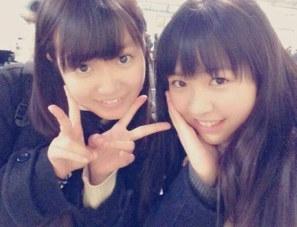

| 2014/01 21 Tue | ひめたん(*>ω<*)そ の398 |

姉妹ちゃんペアの
みりりん (渡辺みり愛ちゃん)
ふたりでカフェ行きましたー！
なんかねー行きたいねーって
ふわっと約束はしてたんだけどね
なんかお話したくなったから誘ってみたの
ひめたんから誘うことって
あんまないんだよー(/)・ω・(ヾ)
あまりにお話が弾むから
カフェ２件ハシゴしてやりましたよんっ
またさらに仲良くなれたかなって思うし
かわいくて愛おしくて
やっぱり自慢の妹ちゃんだなって///
やだーみりりんにベタベタすぎて
引かれたらどーしよ(笑)
みなさん引かないで(´；；｀)
あっみりりんファンのみなさん
みりりんが
危ないことになったり
迷子になったりってことがないように
全力で気を張ってたから
ご安心くださいね＊＊
これからも仲良くすること
どうか許してくださいねよろしくね( ^O^ )
ままに勧められて
万歩計のアプリをダウンロードしたのよー
それでさ、よく
１日10000歩いたら健康にいいって
聞くじゃなーい？
なんだけどね意外と歩けないの！
10000歩......
みなさんもやってみてー｀・ω・´

今日は収録してきましたー！
詳しくは情報解禁をお待ちくださいませ。
姉妹ちゃんペアの
みりりん (渡辺みり愛ちゃん)
ふたりでカフェ行きましたー！
なんかねー行きたいねーって
ふわっと約束はしてたんだけどね
なんかお話したくなったから誘ってみたの
ひめたんから誘うことって
あんまないんだよー(/)・ω・(ヾ)
あまりにお話が弾むから
カフェ２件ハシゴしてやりましたよんっ
またさらに仲良くなれたかなって思うし
かわいくて愛おしくて
やっぱり自慢の妹ちゃんだなって///
やだーみりりんにベタベタすぎて
引かれたらどーしよ(笑)
みなさん引かないで(´；；｀)
あっみりりんファンのみなさん
みりりんが
危ないことになったり
迷子になったりってことがないように
全力で気を張ってたから
ご安心くださいね＊＊
これからも仲良くすること
どうか許してくださいねよろしくね( ^O^ )
ままに勧められて
万歩計のアプリをダウンロードしたのよー
それでさ、よく
１日10000歩いたら健康にいいって
聞くじゃなーい？
なんだけどね意外と歩けないの！
10000歩......
みなさんもやってみてー｀・ω・´
今日は収録してきましたー！
詳しくは情報解禁をお待ちくださいませ。

 いっつもつけてるブレスレットは
いっつもつけてるブレスレットは
どんなやつなんですかー？
天然石のブレスレットだよー＊
たまに浄化してあげたりして
ちゃんとお手入れしてるんだよ∩´∀`∩
ひめたんビームで受けた傷は
ちーちゃん看病で治せるの？
でたーちーちゃん看病！
あれ受けたことないんだよねー
聞くんかなー？謎ー (´>∀<｀)ゝ
大喜利回答シリーズ好き。
ちょっと待って
大喜利やった覚えない(・∀・)
あれは確か質問にお答えするコーナー......のはず
ひめたんはやっぱり伊勢丹のことを
いせたん↓（ひめたん↓の発音）って
言っちゃう感じですか？
→↑↑↑
いせたん って言いますかね＊
→↑↑↑
ひめたん はどうかしら♪♪
 カルピスは原液のまま飲むタイプですか？
カルピスは原液のまま飲むタイプですか？
ねーまじで(・∀・)
ひめたんのこと何だと思ってるのさ(・∀・)
濃いんでしょ？それくらい知ってるお！
「５倍に」薄めるってことも知ってるお
そーいやミルクで薄める派♪おいしーよー
ひめたんはトリマーさんって、
どんなイメージかな？？
ひめたんもトリマーさんになりたい時期あったのー
わんちゃんが好きだったの
それでおうちの近くにトリマーさんいたから
ガラス越しにみてたなー。
ステキだと思います(っ´ω`c)ふぁいと！
ひめたんは３日だけ１人のメンバーと
無人島で暮らすことになりました。
そしたら誰を選んで連れて行きますか？
愛未(能條愛未ちゃん)かな
なんでかってゆーと
楽しいお話してたら３日間飽きなさそうだから♪♪
大きくなったらひめたんになります！
38のおじさんでもなれるかな？
えーっとねーそうだなー
がんばって(＊´ω`＊)応援する！
ひめたんのブログの
コメント欄下２ケタに46を踏んだ方へ
手書きでコメ返するコーナー
＼ ひめたん46 ／
コメント欄下２ケタに46を踏んだ方へ
手書きでコメ返するコーナー
＼ ひめたん46 ／

いつもたくさんのコメント
ありがとうございます
そうそうひめたんの初夢はね
ひめたんと おともだちふたりと
ハンバーガー屋さんでお話してるってゆ
みんなと比べるとなんとのほほんとして
平和な夢なんだーって感じがしたけど
これ悪夢だったらやだなあ(´・・｀)
夢......
いつも朝になったら忘れちゃう
そーゆーもんなのかしらねー
(＊´・ω・＊)
ありがとうございます
そうそうひめたんの初夢はね
ひめたんと おともだちふたりと
ハンバーガー屋さんでお話してるってゆ
みんなと比べるとなんとのほほんとして
平和な夢なんだーって感じがしたけど
これ悪夢だったらやだなあ(´・・｀)
夢......
いつも朝になったら忘れちゃう
そーゆーもんなのかしらねー
(＊´・ω・＊)
コメント(446)
2014/01/21 23:42